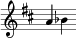

doremi-script end to end test
Thu Dec 19 20:19:26 PST 2013
ambiguous_ornament.txt
n
| P d
#(ly:set-option 'midi-extension "mid")
\version "2.12.3"
\include "english.ly"
\header{
title = ""
composer = ""
tagline = "" % removed
}
%{
n
| P d
%}
melody = {
\once \override Staff.TimeSignature #'stencil = ##f
\clef treble
\key c \major
\autoBeamOn
\cadenzaOn
\bar "|" \afterGrace g'4 { bf'32 } af'4 \break
}
text = \lyricmode {
}
\score{
<<
\new Voice = "one" {
\melody
}
\new Lyrics \lyricsto "one" \text
>>
\layout {
\context {
\Score
\remove "Bar_number_engraver"
}
}
\midi {
\context {
\Score
tempoWholesPerMinute = #(ly:make-moment 200 4)
}
}
}
{"lines":
[{"kind":"latin_sargam",
"start_index":6,
"my_type":"sargam_line",
"items":
[{"is_barline":true, "my_type":"single_barline", "start_index":6},
{"items":
[{"subdivisions":1,
"start_index":8,
"my_type":"beat",
"items":
[{"syllable":null,
"chord":null,
"fraction_array":[{"numerator":1, "denominator":1}],
"pitch_source":"P",
"normalized_pitch":"G",
"numerator":1,
"start_index":8,
"denominator":1,
"octave":0,
"beat-counter":1,
"my_type":"pitch",
"attributes":
[{"placement":"after",
"ornament_items":
[{"pitch_source":"n",
"normalized_pitch":"Bb",
"start_index":3,
"pointer":true,
"octave":0,
"beat-counter":0,
"my_type":"pitch",
"pitch-counter":0,
"value":"n"}],
"source":"n",
"usable_source":"n",
"start_index":3,
"my_type":"ornament"}],
"pitch-counter":1,
"column_offset":0,
"tala":null,
"value":"P"}]},
{"subdivisions":1,
"start_index":10,
"my_type":"beat",
"items":
[{"syllable":null,
"chord":null,
"fraction_array":[{"numerator":1, "denominator":1}],
"pitch_source":"d",
"normalized_pitch":"Ab",
"numerator":1,
"start_index":10,
"denominator":1,
"octave":0,
"beat-counter":0,
"my_type":"pitch",
"attributes":[],
"pitch-counter":2,
"column_offset":0,
"tala":null,
"value":"d"}]}],
"is_partial":true,
"beat_count":2,
"my_type":"measure",
"start_index":7}]}],
"force_sargam_chars_hash":{},
"notes_used":"",
"time_signature":null,
"key":"c",
"author":"",
"start_index":0,
"apply_hyphenated_lyrics":false,
"title":"",
"my_type":"composition",
"attributes":null,
"warnings":[],
"filename":"untitled",
"mode":"major",
"source":" n \n| P d"}
